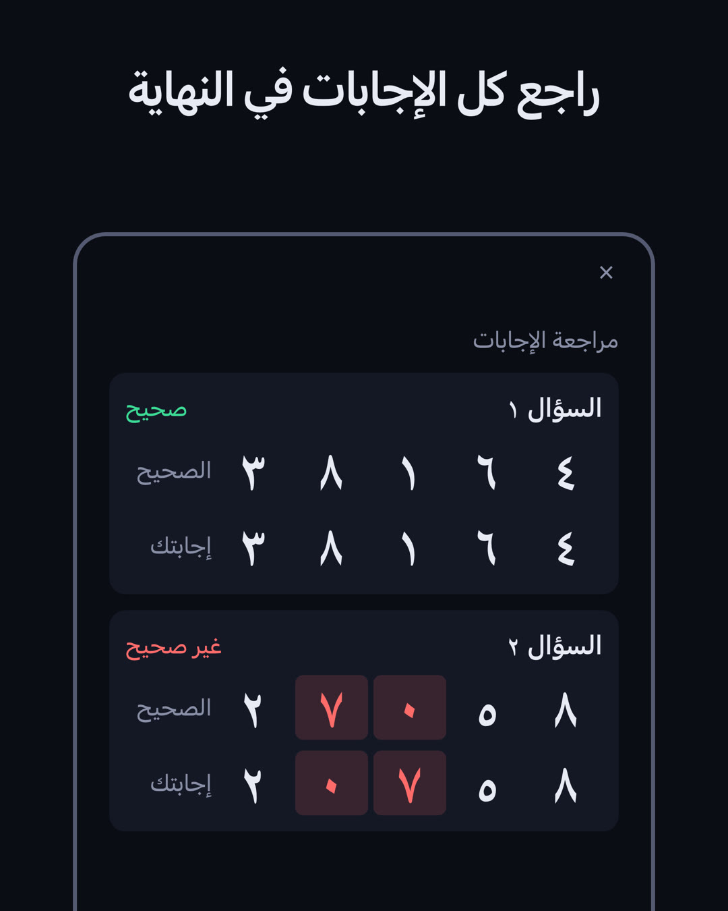
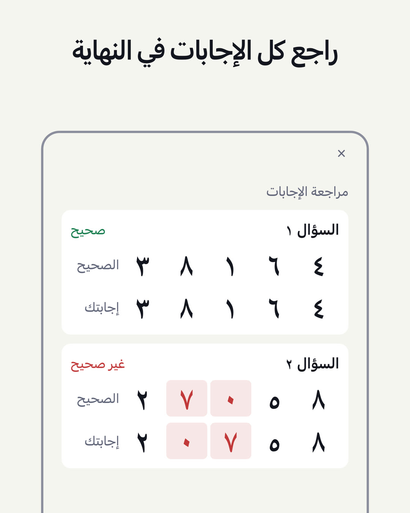

اختبار ذاكرة الأرقام / DIGIT SPAN
كم رقمًا يمكنك تذكّره؟
تظهر الأرقام واحدًا تلو الآخر، وبعد أن تختفي يحين وقت إدخالها بالترتيب الذي ظهرت به. يمكنك اختيار عدد الأرقام، ويتكوّن الاختبار من 5 أسئلة. وأعلى مستوى تكون فيه إجاباتك عن الأسئلة الخمسة كلها صحيحة يبيّن كم رقمًا يمكنك تذكّره (سعة الأرقام). إنه اختبار بسيط للذاكرة قصيرة المدى.
قريبًا (لأجهزة iPhone · الاستخدام الأساسي مجاني)

طريقة الاستخدام
- مشاهدة الأرقامتظهر الأرقام واحدًا تلو الآخر (0.7 ثانية لكل رقم في الإعداد الافتراضي).
- إدخالها بالترتيب الذي ظهرت بهفي وضع «من آخر رقم» تُدخَل الأرقام بدءًا بآخر رقم ظهر وانتهاءً بأول رقم.
- مراجعة الإجابات بعد 5 أسئلة5 أسئلة بعدد الأرقام نفسه. بعد كل سؤال يظهر فقط ما إذا كانت الإجابة صحيحة أم لا، وفي النهاية تُعرض إجابات الأسئلة الخمسة كلها معًا. وأعلى مستوى تكون فيه إجاباتك عن الأسئلة الخمسة كلها صحيحة هو سعة الأرقام لديك.
الدليل الكامل والأسئلة الشائعة ←
الميزات
- اختباران: «بالترتيب» و«من آخر رقم»، ولكلٍّ منهما أفضل نتيجة شخصية مستقلة. وفي «من آخر رقم» يُعاد ترتيب الأرقام في الذهن، لذا يستعين الاختبار أيضًا بالذاكرة العاملة
- مراجعة الأسئلة الخمسة كلها في شاشة «النتيجة»: إجابتك بجوار الإجابة الصحيحة، مع تلوين الأرقام المختلفة
- متابعة «أفضل نتيجة لكل يوم» مع مرور الوقت في شاشة «الإحصاءات»
- إمكانية تغيير المستوى (من 2 إلى 12 رقمًا) و«سرعة عرض الأرقام» (من 0.05 إلى 2.0 ثانية)
- إمكانية اختيار «طريقة العرض»: «الشاشة» أو «الصوت» أو «كلاهما». ومع «الصوت» وحده يصبح الاختبار اختبارًا للحفظ بالسمع
- إمكانية اختيار «السمة» («حسب الجهاز» أو «فاتح» أو «داكن») و«اللون» (بنفسجي أو أزرق أو برتقالي أو وردي)
- جميع الأرقام بعرض ثابت، على شاشة خالية من الزخارف تشبه أداة القياس
- تُحفظ السجلات على جهازك فقط. لا حاجة إلى تسجيل الدخول
يُقال إن المعتاد لدى البالغين في وضع «بالترتيب» هو 7±2 أرقام (Miller, 1956). غير أن هذا التطبيق لا يحتسب المستوى إلا عند الإجابة الصحيحة عن الأسئلة الخمسة كلها بعدد الأرقام نفسه، لذا تختلف طريقة الاحتساب عن الاختبارات المعتادة. هذا التطبيق وسيلة للتعرّف على حالة الذاكرة، وليس تشخيصًا طبيًا، ولا يهدف إلى تحسين الذاكرة.
تطبيق شقيق
عن الإعلانات
تظهر الإعلانات أسفل شاشات «الرئيسية» و«النتيجة» و«الإحصاءات». ويظهر إعلان بملء الشاشة عند بدء الاختبار («بدء الاختبار» في الشاشة الرئيسية و«إعادة الاختبار» في شاشة النتيجة؛ مرة واحدة من كل مرتين). ولا تظهر أي إعلانات أثناء مشاهدة الأرقام أو إدخال الإجابة أو عرض الحكم عليها.
لا تظهر أي إعلانات أثناء الاشتراك في بريميوم (اشتراك شهري يتجدد تلقائيًا؛ يظهر السعر في التطبيق وفي App Store). ويتجدد الاشتراك تلقائيًا ما لم يُلغَ قبل 24 ساعة على الأقل من نهاية الفترة الحالية. والشروط وطريقة الإلغاء موضّحة في شروط الخدمة. وجميع ميزات الاختبار والإحصاءات متاحة دون اشتراك.